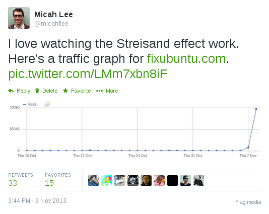

Ubuntu is finally taking privacy seriously
Update: A couple people have pointed out that the privacy changes won’t actually take affect in 14.04, which means that fixubuntu.com will still be necessary until at least 14.10, which will be released in October. Oops.
In October 2012, Canonical made a horrible mistake. They included a “feature” in Ubuntu 12.10 that has been widely considered adware and spyware. I blogged about the new Ubuntu’s Amazon ads and data leaks for EFF at the time, with the main ask being that Dash’s online search should be an opt-in feature and not enabled by default.
Ubuntu’s disregard for user privacy become the impetus that caused me to switch to Debian (though nowadays I’m running Qubes). And in order to make it easier to fix Ubuntu’s privacy problems on new computers I helped people set up, I started the website Fix Ubuntu.
Canonical, the company that makes Ubuntu, sent me a bogus takedown notice about it—later apologizing for it. While it made the privacy issue blow up in the media again, Canonical still refused to fix their bad privacy choices.

So after all of this, I’m thrilled to see that Ubuntu 14.04 LTS, which is due for release later this month, won’t include online searches in Dash by default! For the first time in a year and a half of releases, a default installation of Ubuntu won’t be phoning home with everything you type into Dash, or annoying you with unsolicited ads.
Thank you, Canonical, for finally taking privacy seriously.
(While I’m at it: Thank you, Edward Snowden, for making everyone finally start to take privacy seriously.)